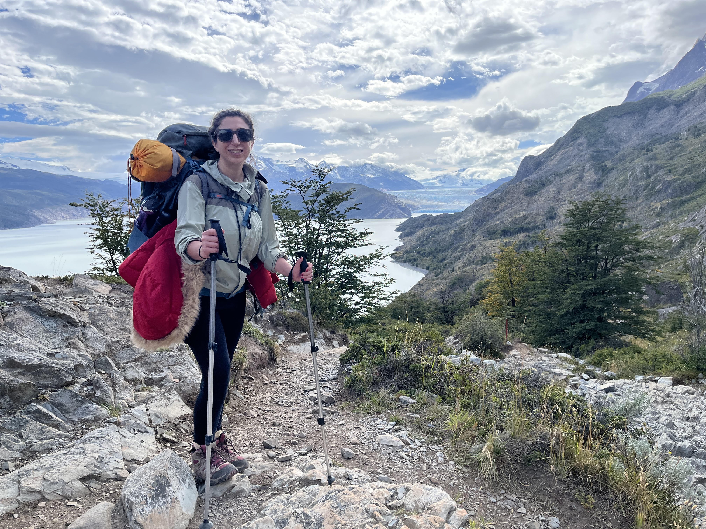

Gazelle Taherzadeh, PhD
Senior Data Scientist & Applied AI Leader, Bridging computer science, AI, and scientific discovery to solve complex real-world problems.
About Me
Senior Data Scientist with 15+ years of experience designing, developing, and deploying machine learning (ML) systems, predictive models, and computational solutions within a PBM environment supporting ~5 million members across healthcare. Ph.D. in Computer Science focused on computational biology and drug discovery, recognized for developing the first ML-based protein-peptide interaction prediction tool deployed as a publicly available platform, contributing to a CASP/CAPRI docking team ranked among the top 10 internationally, founding a Data Science program from scratch, and receiving the Outstanding New Faculty Award.
Currently serving as a data science practitioner and an AI/BI Automation Manager, leading and building hands-on production AI and data science solutions, including an end-to-end medication adherence management platform integrating predictive modeling, explainability, causal inference, and LLM-based intervention; claims and member KPI trend and forecasting pipelines in reporting dashboards; and enterprise reporting automation achieving 95% report accuracy across 600+ reports while reducing manual reporting effort by 2,000+ hours annually.
Education
Ph.D., Computer Science
Applied Machine Learning & Bioinformatics
Griffith University - Gold Coast, Australia
2014 - 2018
M.Sc., Computer Science
Artificial Intelligence
University of Malaya - Kuala Lumpur, Malaysia
2011 - 2013
B.Sc., Information Technology
Software Engineering
Multimedia University - Cyberjaya, Malaysia
2007 - 2011
Experience
PerformRx | Philadelphia, PA
I architect and lead hands-on development of end-to-end AI and machine learning solutions for healthcare, including an AI-driven medication adherence platform integrating predictive modeling, explainability, causal analysis, LLMs, RAG, and prompt engineering across ~2 million members. I develop predictive and forecasting solutions using ensemble methods, survival analysis, and advanced feature engineering; manage the ML lifecycle through Databricks, Unity Catalog, and Azure; lead automation of 600+ enterprise reports achieving 95% accuracy; and serve as the Pharmacy Informatics lead for the transition to cloud-based Data Lake and Databricks architecture. I also evaluate emerging AI technologies for healthcare applications, translate complex analytical and technical insights into actionable recommendations for senior leadership, and lead a team of five while collaborating across AI/ML, data engineering, reporting, and software development.
Built the foundation for enterprise report automation by developing a centralized predictive reporting prototype, translating stakeholder requirements into analytical frameworks and reporting specifications, and systematically assessing healthcare and pharmacy data sources and reporting structures. Promoted to AI/BI Automation Manager within four months based on demonstrated technical contribution and domain expertise.
Wilkes University
Partnered with four industry organizations to translate real-world AI and software challenges into project scopes, oversaw student delivery, and bridged academic and industry applications.
Wilkes University
Founded and built a Data Science program from the ground up, designing curriculum and aligning offerings with industry needs in AI, machine learning, and cloud computing. Taught computer science, AI, ML, and data science to 500+ students and received the 2023 Outstanding New Faculty Award. Supervised computational biology research developing protein–small molecule datasets that supported deep learning research and multiple peer-reviewed publications, while collaborating across institutions on an NSF LSAMP initiative supporting underrepresented STEM students.
University of Maryland, Institute for Bioscience and Biotechnology Research | Rockville, MD
Developed GNN, CNN, and LSTM-based machine learning models for computational drug discovery, including antibody–antigen complex modeling and protein–protein docking. Contributed to SARS-CoV-2 antibody recognition research published in *PLOS Computational Biology* and to a CASP/CAPRI protein–protein docking team ranked among the top 10 internationally in a blind prediction competition.
Griffith University | Gold Coast, Australia
Worked on data analysis and computational implementations for machine learning and biological data projects, including sequence-based predictive modeling for RNA modification prediction. Contributed to implementation and analysis supporting research on RNA 5-hydroxymethylcytosine 5hmC) prediction while continuing to develop practical data science and machine learning expertise.
Joii Invent | Brisbane, Australia
Contributed to R&D across six government-funded infrastructure projects by researching emerging data science and ML approaches and developing end-to-end predictive pipelines spanning data characterization, feature engineering, model selection, and evaluation. Collaborated with development and testing teams on solution design and deployment, translated analytical results into actionable insights for project managers, and supported product adoption through training.
Griffith University | Gold Coast, Australia
Built and curated protein complex datasets from sequence and structural data, developing data-processing and feature-engineering workflows for machine learning research. Developed and evaluated ML and deep learning models for protein interaction and function prediction, and deployed a publicly available ML-based protein-function prediction platform integrating bioinformatics, sequence, and structural analysis. Presented research at ISMB, a leading international conference in bioinformatics and computational biology.
Selected Projects
Medication Adherence Prediction
PerformRx · Healthcare AIApplied predictive modeling to heterogeneous healthcare, pharmacy, and SDoH data, translating research into operational decision support.
Molecular Interaction & Computational Drug Discovery
PhD / Postdoc · Computational BiologyComputational modeling of small-molecule interactions, protein interactions, antibody docking, and T-cell receptor docking.
Protein Function & Protein–Peptide Prediction
Academic Research · Deep LearningDeveloped deep-learning approaches for protein-function prediction and protein–peptide interaction region prediction.
NLP & Generative AI
Academic & EnterpriseApplied NLP to large-scale social-media data and evaluated LLM, RAG, and AI-agent approaches for knowledge-intensive applications.
Research & Publications
Research Background
My research background is in computer science, traditional and modern machine learning, bioinformatics, computational biology, and structural biology.
Selected Publications
Shafiee, S., Fathi, A., & Taherzadeh, G. (2025). Protein-peptide interaction region residues prediction using a generative sampling technique and ensemble deep learning-based models. Applied Soft Computing, 182, 113603.
Yin, R., Guest, J. D., Taherzadeh, G., et al. (2021). Structural and energetic profiling of SARS-CoV-2 receptor binding domain antibody recognition and the impact of circulating variants. PLoS Computational Biology, 17(9), e1009380.
Lensink, M. F., Brysbaert, G., Mauri, T., et al., including Taherzadeh, G. (2021). Prediction of protein assemblies, the next frontier: The CASP14-CAPRI experiment. Proteins: Structure, Function, and Bioinformatics, 89(12), 1800–1823.
Taherzadeh, G., Zhou, Y., Liew, A. W. C., & Yang, Y. (2018). Structure-based prediction of protein-peptide binding regions using Random Forest. Bioinformatics, 34(3), 477–484.
Abrahams, J. L., Taherzadeh, G., Jarvas, G., et al. (2020). Recent advances in glycoinformatic platforms for glycomics and glycoproteomics. Current Opinion in Structural Biology, 62, 56–69.
Skills & Expertise
AI, Machine Learning & Deep Learning:
Machine Learning (ML), Predictive Modeling, Classification, Regression, Clustering, Feature Engineering, Ensemble Methods, Statistical Modeling, Explainable AI (XAI), Scikit-learn, Deep Learning (DL), Graph Neural Networks (GNNs), Convolutional Neural Networks (CNNs), Long Short-Term Memory (LSTM), Natural Language Processing (NLP), Large Language Models (LLMs), Retrieval-Augmented Generation (RAG), Prompt Engineering, Model Evaluation, Hypothesis Testing, Survival Analysis, Evolutionary & Genetic Algorithms, TensorFlow, PyTorch, Keras, LangChain.
Programming, Data & MLOps Engineering:
Python, SQL, Bash (fluent), PySpark, R, MATLAB (working knowledge), NumPy, SciPy, Pandas, Biopython, Databricks, Apache Spark, Delta Lake, Unity Catalog, Azure, MLflow, Docker, Git, CI/CD, ETL/ELT, Data Pipeline Design, Cloud-Based Data Lake Architecture, Enterprise Data Platform Implementation, Model Deployment & Monitoring.
Data Visualization & BI:
Matplotlib, Seaborn, Power BI, Tableau.
Computational Biology & Healthcare Analytics:
Proteomics, Structural Biology, Protein Sequence & Structure Analysis, Protein Interaction (PPI) and Function Prediction, Small Biomolecular Analysis and Interaction, Computational Drug Discovery & Design, BLAST, PSI-BLAST, Multiple Sequence Alignment (MSA), PSSM, Rosetta, ZDOCK, PyMOL, Healthcare Analytics, Pharmacy Informatics, Pharmacy Claims & Benefits, Eligibility and Membership, Medication Adherence, Clinical Data Analysis, Social Determinants of Health (SDoH).
AI Strategy & Architecture:
AI Strategy, AI Solution Architecture, End-to-End AI Development, Responsible AI, Technology & Vendor Evaluation, Roadmap Development.
Technical Leadership:
Technical Team Leadership, Team Management & Mentoring, Cross-Functional Leadership, Executive & Stakeholder Communication.
Personal

Outside of work
I enjoy spending time outdoors, traveling, exploring new places, and staying curious outside of my professional work.
Hiking, dancing, reading, art, and creative projects are some of the things that keep life interesting beyond technology and data.